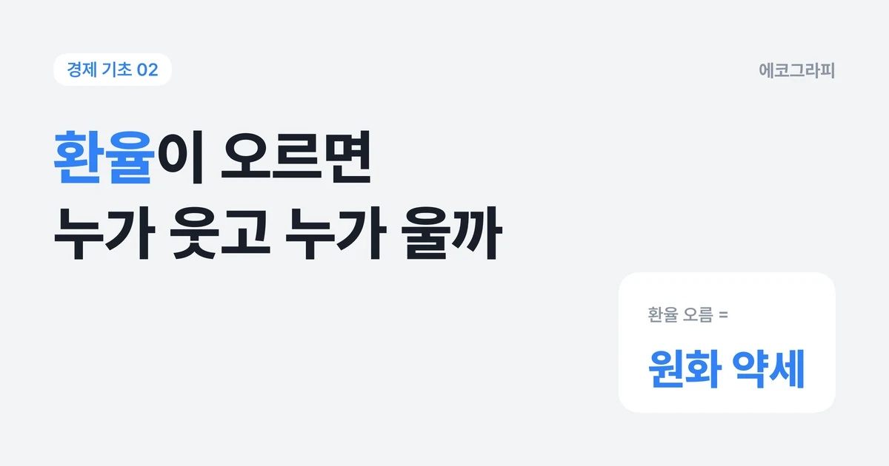
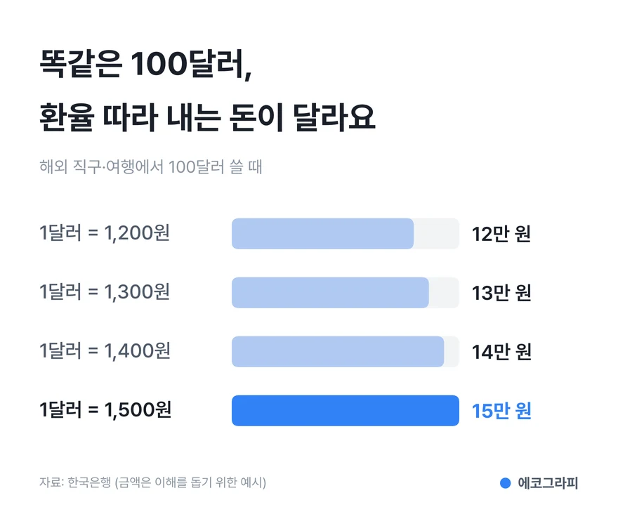
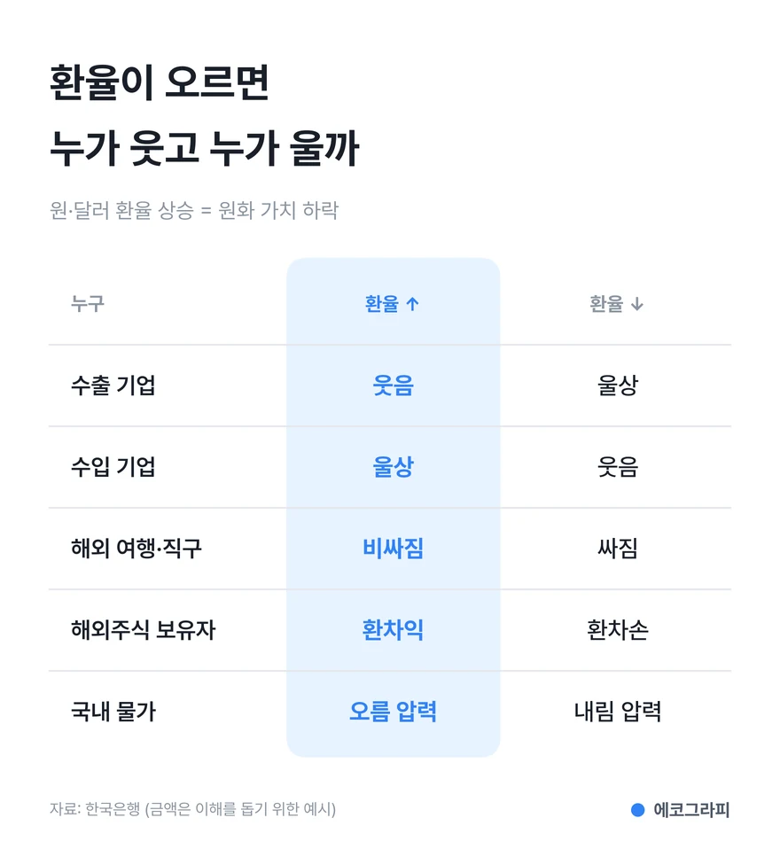
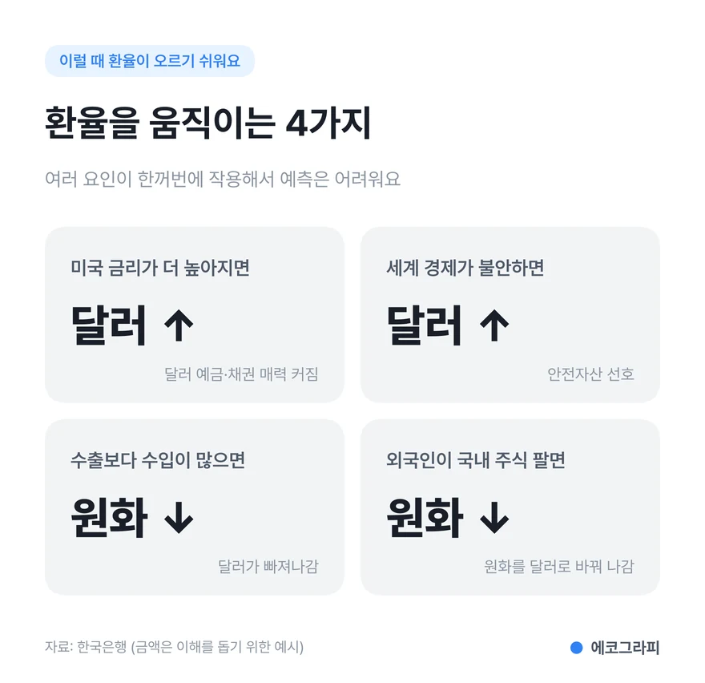
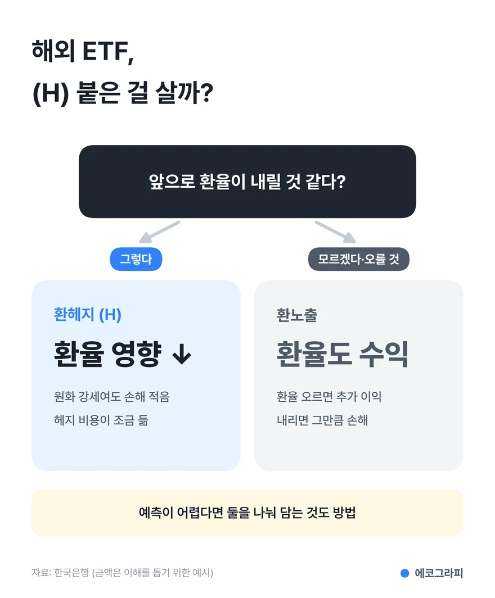

뉴스에서 "환율 1,400원"이라고 하면 1달러를 사려면 1,400원이 필요하다는 뜻이에요. 이 숫자가 커질수록 같은 1달러를 사는 데 원화가 더 많이 들죠. 그래서 환율 상승 = 원화 가치 하락(원화 약세)입니다.

환율이 1,200원에서 1,500원이 되면 같은 100달러짜리 물건에 3만 원을 더 내야 해요. 숫자가 오르는데 원화는 약해진다는 게 처음엔 헷갈리지만, "달러 가격이 올랐다"고 생각하면 쉽습니다.

환율도 결국 달러와 원화의 수요·공급으로 정해져요. 달러를 원하는 사람이 많아지면 달러 값(환율)이 오릅니다.

달러인덱스는 달러가 유로·엔 같은 주요 통화보다 강한지 약한지 보여주는 지수예요. 달러인덱스가 오르면 원·달러 환율도 같이 오르는 경우가 많아요.
미국 주식이나 해외 ETF에 투자하면 주가 + 환율 두 가지에서 수익이 결정돼요. 환율 영향을 줄이고 싶으면 이름에 (H)가 붙은 환헤지 상품을 고르면 됩니다.

환율이 많이 오른 뒤에 해외 자산을 사면, 나중에 환율이 내려갈 때 주가 수익을 환차손이 깎아 먹을 수 있어요. 한 번에 사기보다 나눠서 사는 게 안전합니다.
아니요. 수출 기업과 해외 자산 보유자에겐 좋고, 수입 물가와 해외 소비에는 나빠요. 누구 입장이냐에 따라 달라요.
은행이 환전 수수료(스프레드)를 붙이기 때문이에요. 앱 환전 우대를 쓰면 줄일 수 있어요.
1엔은 단위가 작아서 관례적으로 100엔당 원화로 표시해요.
기준 시점에 따라 달라요. 과거 평균과 비교하거나 다른 통화 대비 달러 흐름(달러인덱스)도 같이 봐야 해요.
※ 2026년 11월 기준으로 정리한 글입니다. 세율·제도는 바뀔 수 있으니 거래 전 증권사·국세청 안내를 한 번 더 확인하세요. 특정 종목·상품의 매수·매도 권유가 아닙니다.